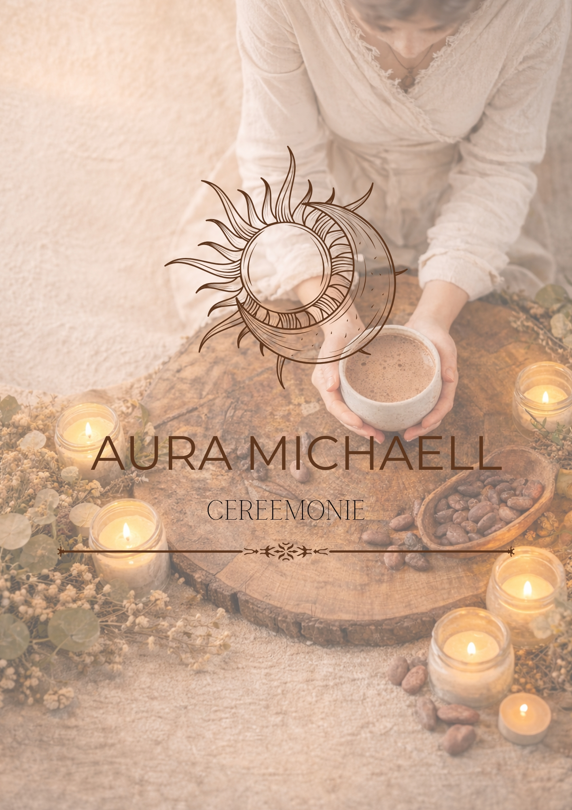
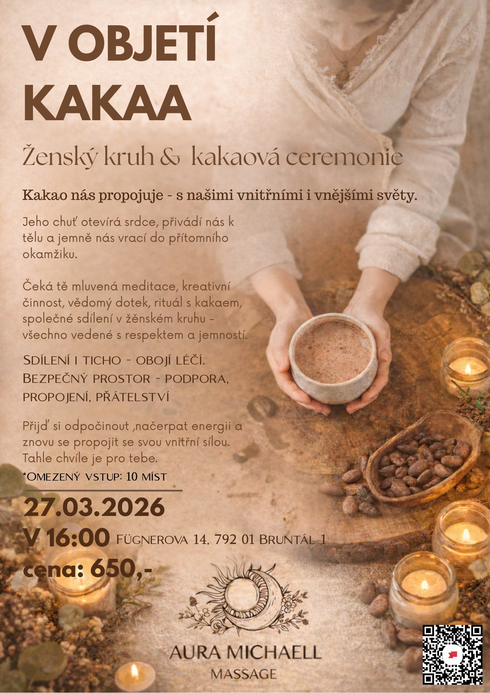

Co je Aura ceremonie?
Je to setkání žen v kruhu, kde sdílíme, nasloucháme a prohlubujeme spojení se sebou.
Nejde o výkon ani o „správnost“. Jde o autenticitu, pravdivost a bezpečí.
Co můžeš během ceremonie zažít?
- Vytvoření společného záměru
- Rituální sdílení kakaa
- Vedenou meditaci nebo jemnou vizualizaci
- Prostor pro dobrovolné sdílení
Arteterapii – intuitivní tvoření(kresba, psaní, práce s barvou) , které pomáhá vyjádřit to, co slovy někdy nejde uchopitVědomý dotek – jemnou práci s tělem ve formě bezpečného a respektujícího doteku, který podporuje uvolnění, návrat do těla a pocit přijetíTarotové karty – jako nástroj sebereflexe a hlubšího nahlédnutí do aktuálního tématu(nejde o věštění, ale o podporu vnitřního uvědomění) - Práci s dechem a lehkým pohybem
- Závěrečné ukotvení a integraci prožitků
Každý kruh je jedinečný a jednotlivé prvky se mohou jemně proměňovat podle tématu a energie skupiny.
Pro koho je kruh určen?
- Pro ženy, které cítí, že potřebují
zpomalit . - Pro ty, které chtějí být slyšeny i
slyšet druhé . - Pro ženy, které touží po vědomém prostoru bez tlaku a očekávání.
Nemusíš mít žádnou předchozí zkušenost.
Stačí přijít taková, jaká jsi..✨️
 Rezervace zde
Rezervace zde

